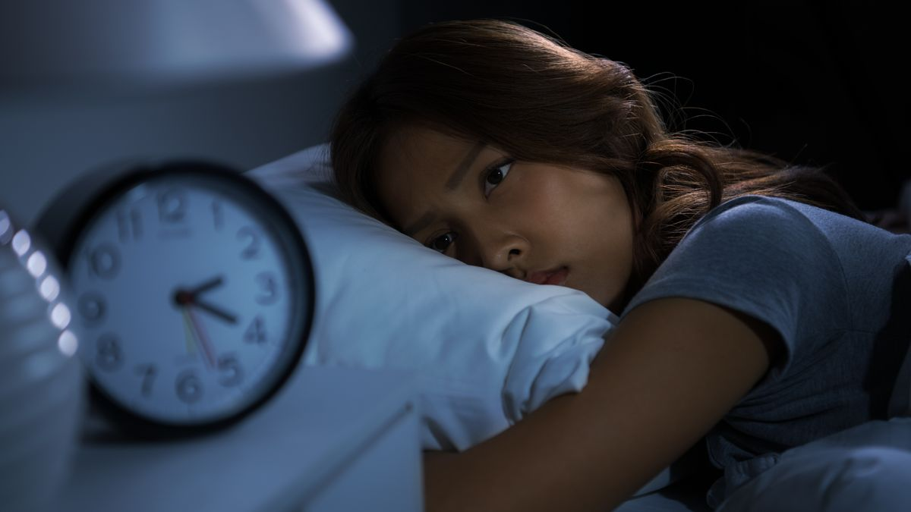

51 Prozent der Menschen schlafen schlecht
Tatsache ist, dass guter Schlaf keine Selbstverständlichkeit ist. So erleben laut einer deutschen Forsa-Studie 51 Prozent der 1.500 Befragten ihren Schlaf als nicht erholsam. Doch wer dauerhaft zu wenig oder schlecht schläft, muss mit Konsequenzen rechnen, was auch der Leiter des Interdisziplinären Schlafmedizinischen Zentrums der Charité in Berlin, Ingo Fietze, gegenüber dem Handelsblatt bestätigt: „Wir wissen seit diesem Jahr, dass mehr als zehn Jahre zu kurzer oder zu schlechter Schlaf an die Lebenserwartung geht.“